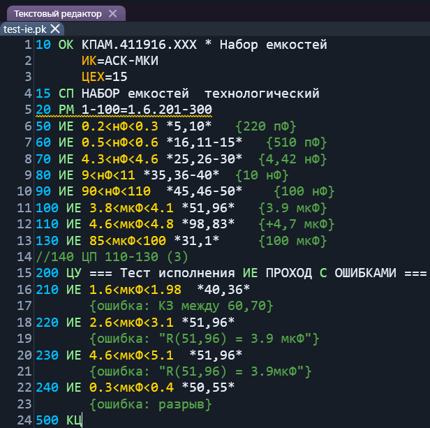
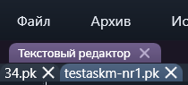
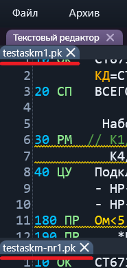
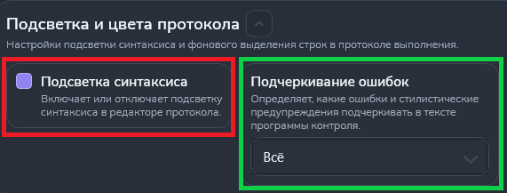
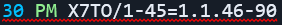
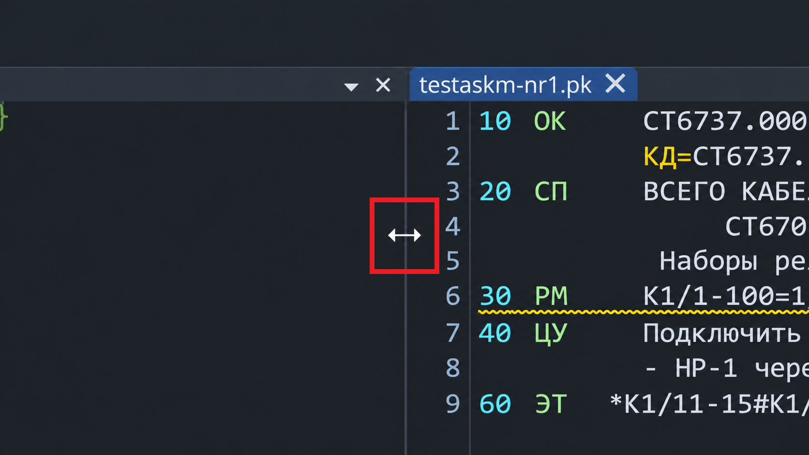

Описание работы
Текстовый редактор — это окно, где вы просматриваете и редактируете программы контроля.
Открывается, когда:
- Открываем файл программы контроля;
- Создаем новый файл программы контроля;
- Сравниваем файлы программ контроля;
- Транслируем файл программы контроля.

Функциональные возможности
Нумерация строк: слева от текста показывается номер каждой строки.
Несколько окон: можно открыть несколько редакторов одновременно, чтобы одновременно работать с несколькими файлами.
-
При открытии нескольких файлов в левом верхнем углу под вкладкой "Текстовый редактор" будут вкладки всех открытых файлов,
между которыми можно переключатся.
Пример показан на рисунке 2. -
Можно включить параллельный просмотр нескольких файлов.
- Для этого нужно навестись мышкой на вкладку нужного файла (вкладки показаны на рисунке 2), нажать левую кнопку мыши (ЛКМ) и, удерживая её, начать перетаскивать;
- После начала перетаскивания появится крестовина расположения файла (пример показан на рисунке 3);
- В зависимости от выбраной стороны крестовины, файл будет размещен сверху, снизу, слева, справа (пример размещения снизу показан на рисунке 4, красным подчеркнуты вкладки файлов).
-
Если нужно выйти из параллельного просмотра и вернуть вкладки в ряд (как на рисунке 2), то снова наведитесь мышкой на вкладку и удерживая перетащите
в пространство соседней вкладки.
Появится крестовина расположения файла (рисунко 3), выберите центральную часть крестовины.


Подсветка синтаксиса: окрашивание всех элементов в различные цвета.
- Например, синим цветом окрашиваются номера команд, а зелёным цветом сами команды.
- Управление подстветкой осущевствляется в настройках программы, раздел "Интерфейс", подраздел "Подсветка и цвета протокола", показанном на рисунке 5 (красный квадрат).

Подчеркивание синтаксиса: подчеркивает синтаксические и стилистические ошибки в тексте волнистой линией.
- Красным цветом подчеркиваются синтаксические ошибки, из-за которых программа не сможет быть транслирована.
- Желтым цветом подчеркиваются стилистические ошибки. На работу они не повлияют, но укажут на нечитабельный или неаккуратный код.
-
Управление подчеркиванием осущевствляется в настройках программы, раздел "Интерфейс", подраздел "Подсветка и цвета протокола", показанном на рисунке 5 (зелёный квадрат).
На выбор три варианта настройки:- Нет - подчеркивание отключено;
- Всё - подчеркивание включено;
- Только ошибки - включено только подчеркивание синтаксических ошибок.

Окно поиска и замены: при помощи сочетания клавиш, описаных ниже, можно быстро найти и/или заменить текст.
- Подробнее можно узнать на соответствующей странице.
Полезные приёмы
- Быстрая справка по команде: выделите слово/команду в тексте и нажмите F1 — откроется соответствующая статья справки.
-
В параллельном просмотре нескольких файлов можно регулировать размеры окон.
Для этого нужно навести мышкой на границу между окнами, нажать левую кнопку мыши (ЛКМ) и, удерживая её, начать перетаскивать границу в нужную сторону.
Пример показан на рисунке 8, регулировка мышкой обведена в красных квадрат.
